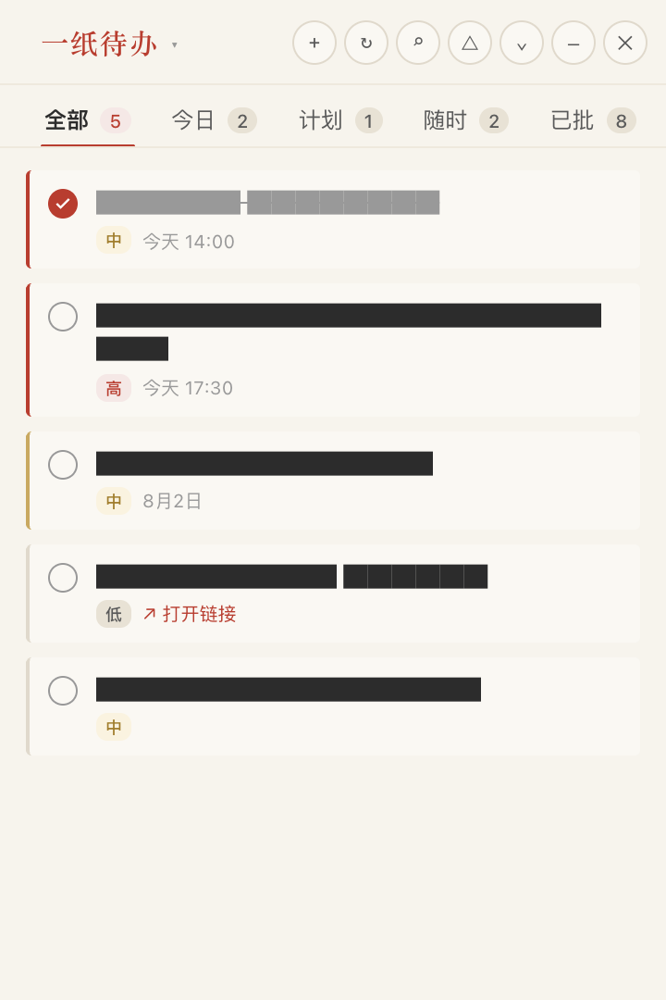
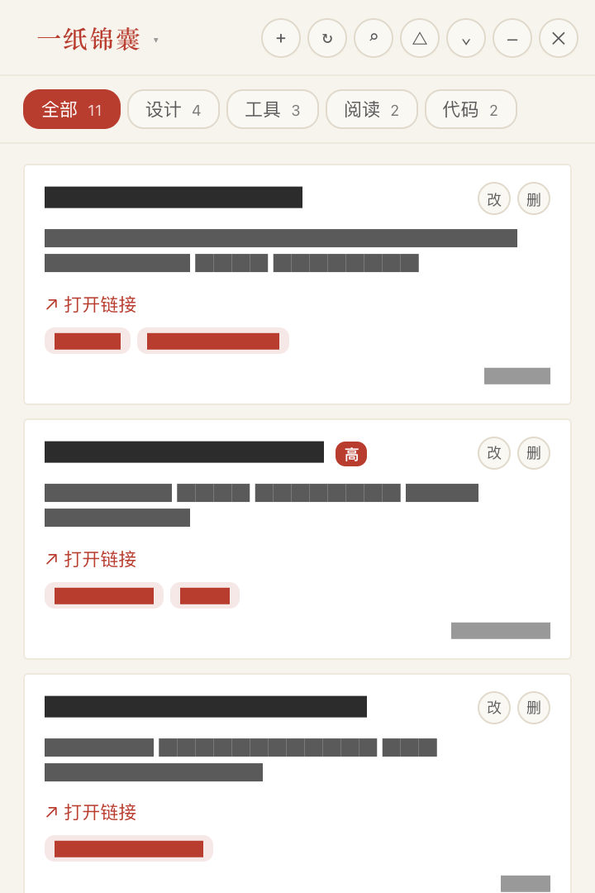

卍
一紙手記
使用
源碼
社群
下載
日誌
註冊
登入
→
待辦，
然
後
執筆
桌面端
指令行
一紙手記，是為現代 AI 工作流而生的小工具。 支持並行任務、語音即錄、飛書直連， 桌面一角常顯，無彈窗、無訂閱、無追蹤。
前往
GitHub
→
公開測試 · v1.0.6 · macOS
星標收藏
★ 128
FOLLOW · young920/voice-todo-float
一紙手記 — 待辦

DESKTOP
桌面懸浮
語音即錄 · 飛書直連
一紙手記 — 錦囊

COLLECTION
靈感錦囊
連結收藏 · 隨手摘錄
CLI — Terminal
›
TODOList 明天 10 點回電話
→ 已建立 · 明日 10:00
→ 已同步至飛書 Base
›
TODOList 給貓買罐頭
→ 已建立 · 待辦
›
TODOShow
→ 今日 2 · 計劃 1 · 隨時 2
█
VOICE
語音即錄
一句話建任務